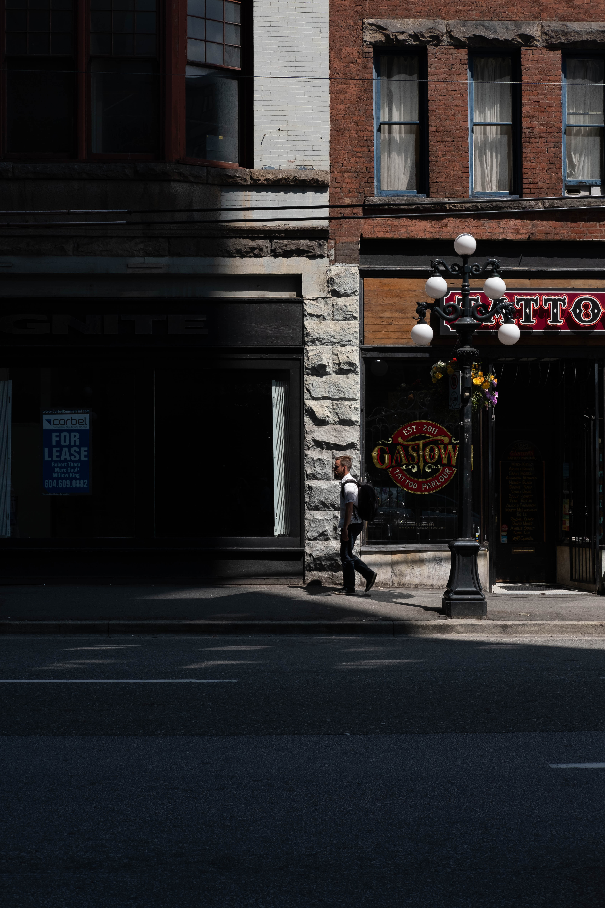
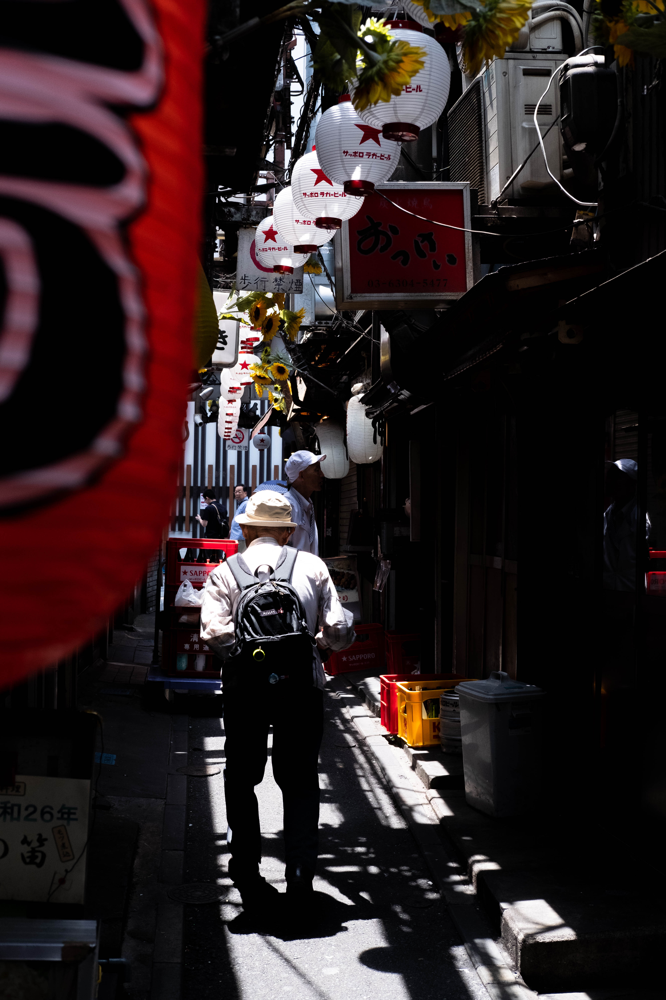
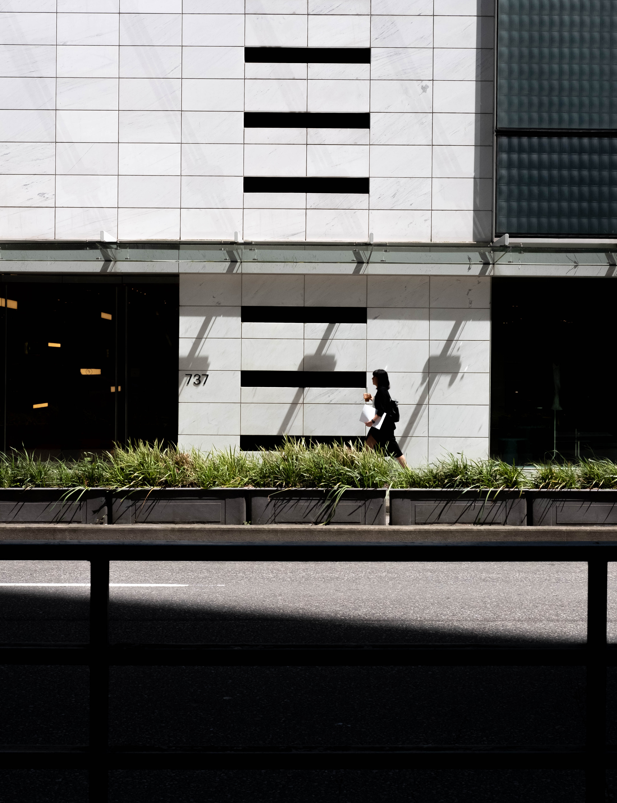
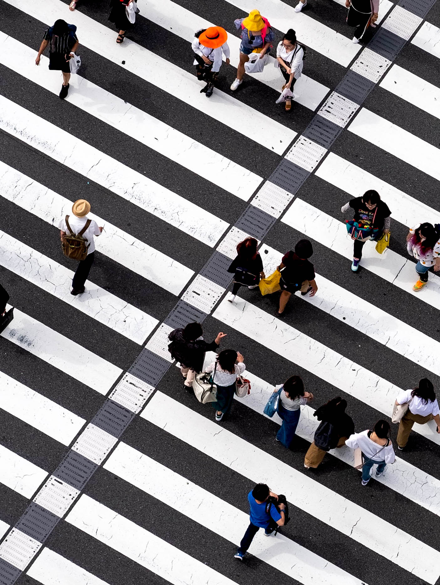
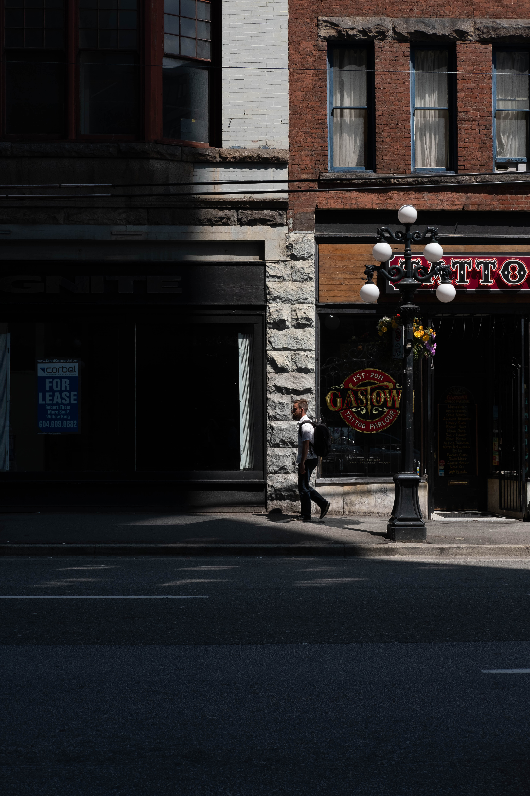
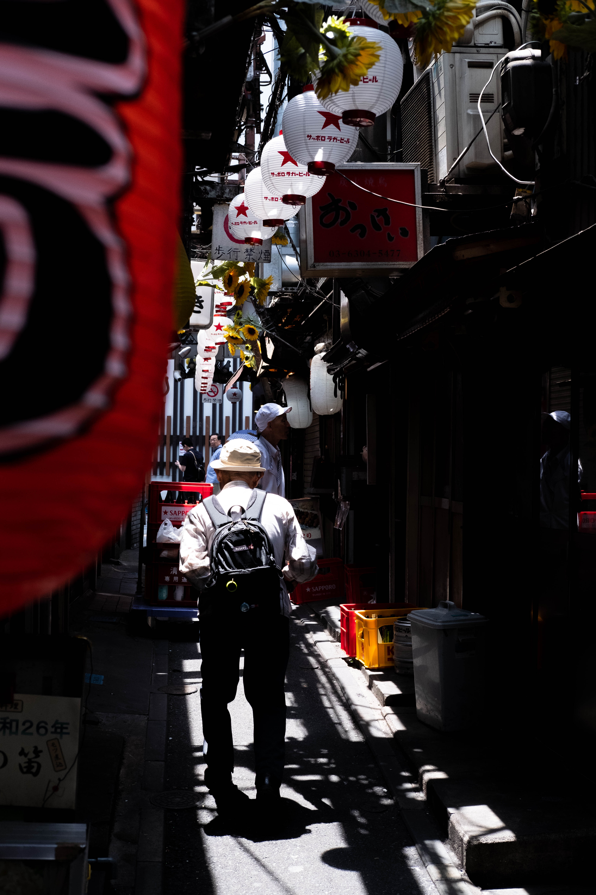
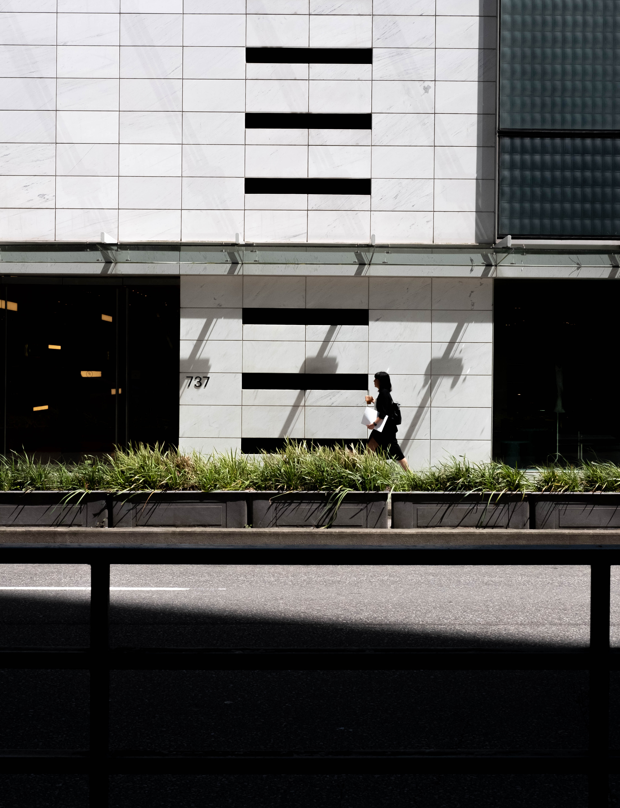
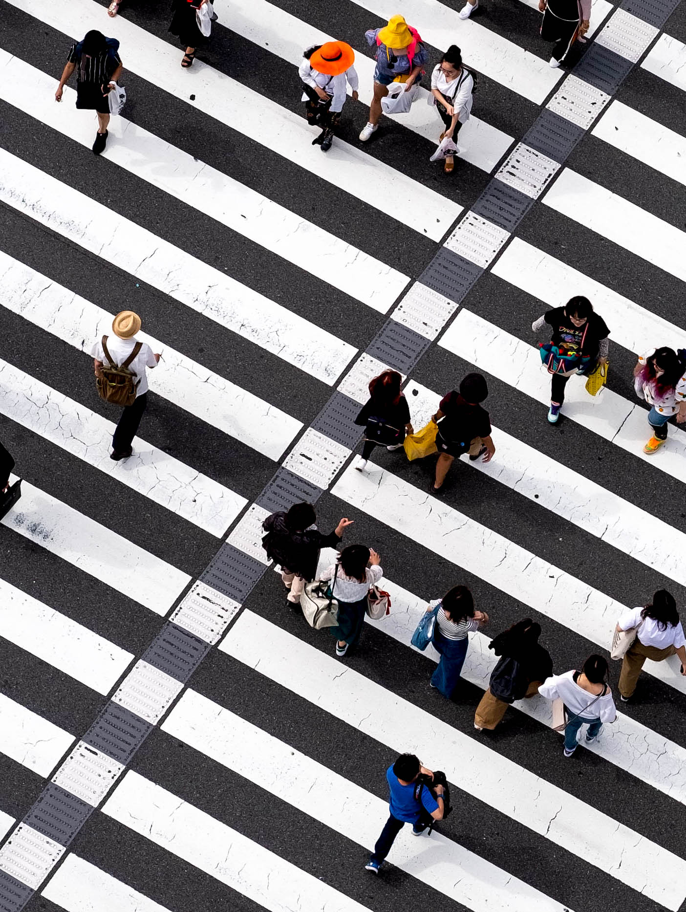

Much like The Last Airbender, everything changed when I was introduced to street photography. I had never felt the same rush as I did meneuvering the streets with a barely functioning camera. The pulverizing construction sites, the waiting, the sense of urgency to not miss a single frame of life. It all felt important. Street photography provided the foundation for my attitude, philosophy, and ethic—of which I carry to this day, in my life and work.
 






